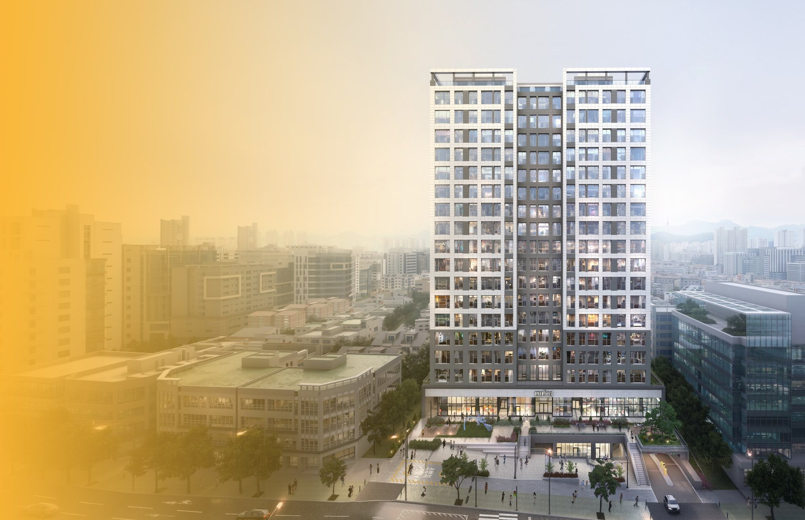
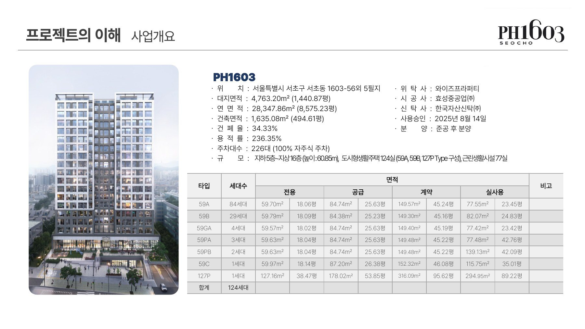
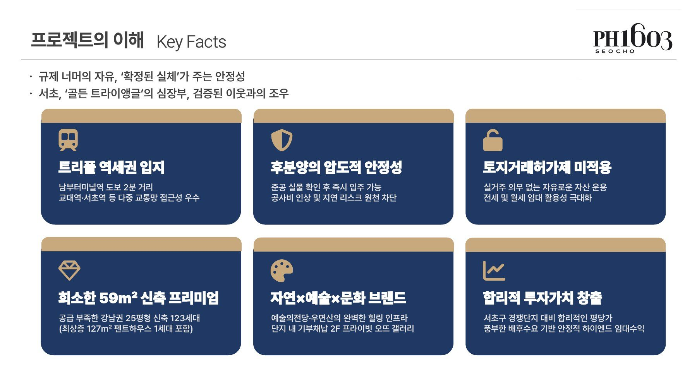
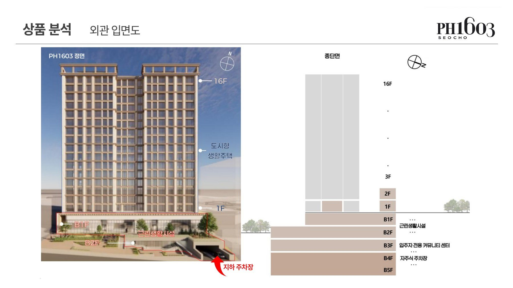
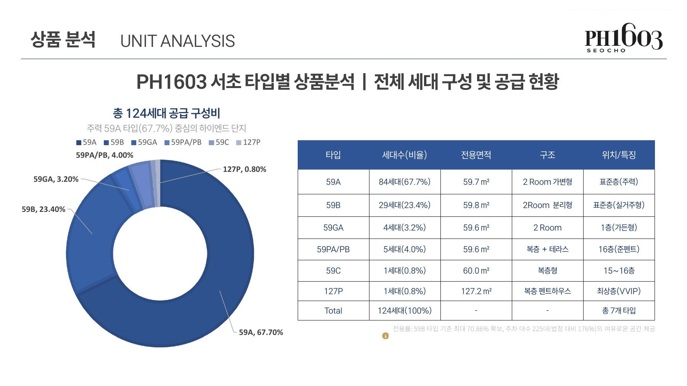
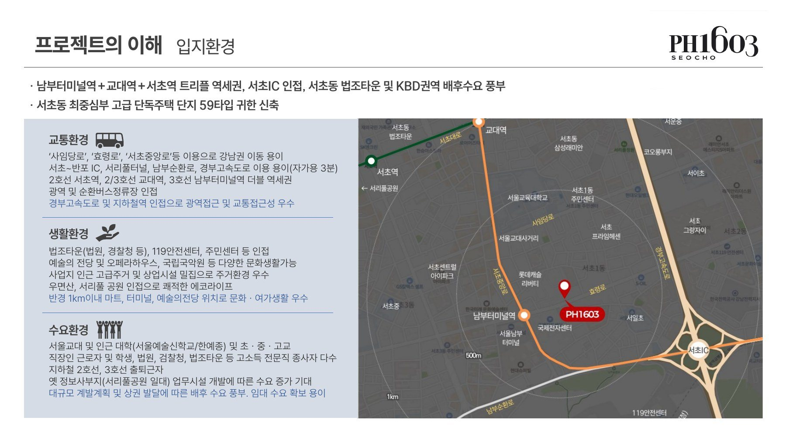
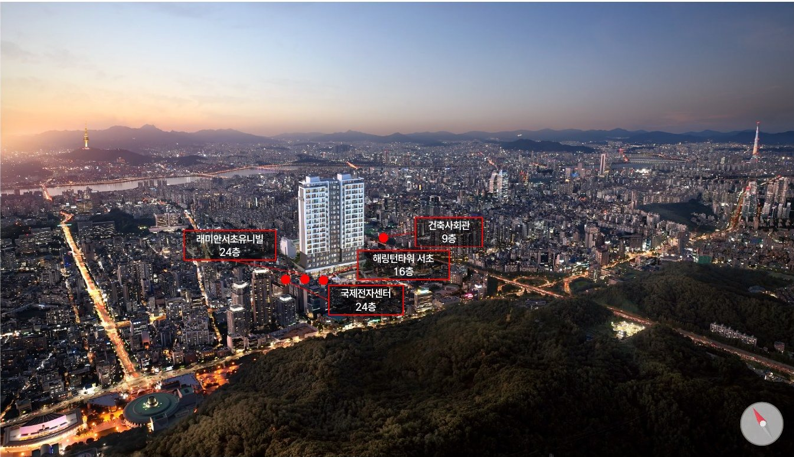

PRIVATE HAUTE GALLERY
PH1603
서초 PH1603서초의 풍경을 소유하는당신만의 컬렉션준공 완료 · 즉시 입주
건축규모지상 16층
전체 공급124세대
전용면적59~127㎡
시공효성중공업
PROJECT OVERVIEW
사업개요
2025년 8월 사용승인을 받은 건물로
실물을 직접 보고 결정하는 준공 후 분양 현장입니다.

- 현장명
- 서초 PH1603
- 현장 주소
- 서울특별시 서초구 서초동 1603-56 외 5필지
- 건축규모
- 지하 5층 ~ 지상 16층 · 1개 동
- 공급규모
- 도시형생활주택 124세대
- 대지면적
- 4,763.20㎡ (1,440.87평)
- 연면적
- 28,347.86㎡ (8,575.23평)
- 주차
- 226대 (100% 자주식)
- 시공
- 효성중공업㈜
- 사용승인
- 2025년 8월 14일 사용승인 · 준공 후 분양
- 분양가
- 상담문의
핵심 포인트

외관과 타입 구성


제공 교육자료 기준입니다. 현재 계약 가능한 호실과 실제 공급조건은 상담 시 확인해 주세요.
LOCATION
서초의 교통과 문화를 가까이
남부터미널역·교대역·서초역 생활권에
예술의전당과 우면산을 함께 누리는 입지입니다.

조망

현장 주소서울특별시 서초구 서초동 1603-56 외 5필지
교육자료 작성 시점의 입지 안내입니다. 계획 사업과 시설 운영, 실제 이동 거리와 조망은 관계기관과 현장에서 확인해 주세요.
UNIT PLAN
평면안내
교육자료 중 대표 평면 4종
타입 번호를 누르면 해당 도면이 열립니다.
제공 교육자료의 타입별 도면입니다. 59PA·59PB 등 그 밖의 타입과 실제 구조·면적·옵션, 적용 호실은 현장과 계약자료를 기준으로 확인해 주세요.
CUSTOMER CONTACT
관심고객 접수
성함과 연락처를 남겨주시면 안내해 드립니다.